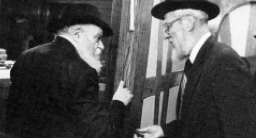

Chassid, Spiritual Leader and Fearless Warrior
Rabbi Avrohom Dov Hecht a”h was a Chassid and mekushar to the Rebbe. * Upon being appointed rabbi of the Syrian community, as rabbi of the Shaarei Tziyon synagogue in Flatbush, he led a k’hilla of 1000 Syrians. As president of the Igud HaRabbanim, Rabbinical Alliance of America, he carried out many missions for the Rebbe. He fought fearlessly for the Rebbe’s battles of Mihu Yehudi and Shleimus HaAretz.

Rabbi Avrohom Dov Hecht a”h was a second generation American, born in 1922. His parents were Yehoshua (Shea) and Sarah Hecht of Brownsville in Brooklyn.
His father was born in 5656/1896 in the US after his parents, R’ Hirsh Meilich and Itta Dreizel, immigrated to the US in 5645/1885. They left the Galician town they lived in after receiving the bracha of the Shiniver Rebbe, Rabbi Yechezkel Halberstam. In those days, moving to America was out of the question for religious Jews. How could they leave the Chassidic town with its life of Torah and t’filla from morning till night, and immigrate to America where the spiritual level was so low with no religious schools for the children?
But after receiving this bracha, he began planning for the trip. When he parted from the tzaddik, his Rebbe gave him a pushka and asked him not to forget his fellow Jews back in Europe. R’ Hirsh Meilich fulfilled his Rebbe’s request and as soon as he arrived in America, he started the charitable organization called Ezras Tzaddikim for Jews in Poland and Galicia.
In Brownsville, R’ Hirsh Meilich’s home was open to all and he willingly helped Jews in need. On Fridays, his wife would get up at two in the morning so she would have time to cook for Shabbos.
R’ Hirsh Meilich opened a shtibel in Brownsville called Rei’im Ahuvim. Minyanim took place there from early morning until late afternoon. Whoever went to the shul received a hot glass of tea and a piece of cake baked by his wife. Whoever tried the shul one time usually returned again and again. People were drawn there because they connected to the homey atmosphere.
Within a short time, R’ Hirsh Meilich started building a mikva. He bought two houses, connected them, and built a mikva. Throughout the area people knew of the beautiful mikva he had built.
When the Rebbe Rayatz visited various cities America in 1929-1930, he also visited the neighborhood of Brownsville. The Rebbe arrived Friday afternoon and headed for the mikva. The mikva was usually closed at that hour, but R’ Hirsh Meilich anticipated that the Rebbe would want to visit the mikva and he had gotten it ready in the Rebbe’s honor. He spread out new rugs on the floor and brought new towels.
After the Rebbe immersed, he left a $10 bill for R’ Hirsh Meilich, which was a large sum in those days. R’ Hirsh Meilich said: I collect tz’daka for the Jews of Galicia and Poland, how can I take such a large sum for myself?
“If that is your decision,” said the Rebbe, “I want to bless you that your grandsons will be amongst my ardent Chassidim!”
R’ Hirsh Meilich answered “amen” with great enthusiasm, for in those days, a bracha like that was worth millions. Nobody was sure that he could raise all his children in the way of Torah, certainly not one’s grandchildren. And here was a bracha not only for his children but for his grandchildren too!
When R’ Hirsh Meilich’s son Shia was born, there weren’t yeshivos to send him to. Since they wanted to raise their children with a proper chinuch, they sent young Shia across the ocean to Yeshivas Chayei Olam in Yerushalayim where he learned for six years.
Upon his return in 1920, he married Sarah, the daughter of R’ Yehoshua Oster, a Chassidishe man who lived in nearby Greenpoint. They established a Jewish home and had six sons: Shlomo Zalman, Moshe Yitzchok, Avrohom Dov, Yaakov Yehuda, Peretz and Sholom.
TANYA CLASSES
When R’ Avrohom Dov was old enough for yeshiva, there was an elementary yeshiva operating in Brownsville called Yeshivas Rabbeinu Chaim Berlin which he attended, but after a number of years he joined his older brothers who were learning in Yeshivas Torah Vodaas in Williamsburg.
The Chassid R’ Yisroel Jacobson, who immigrated to America, also lived in Brownsville. Within a short time, R’ Yisroel became involved with all aspects of Jewish life that the Hecht family was involved in. Aside from his work in Brownsville, he also worked to spread Chassidus by giving shiurim in yeshivos etc. He would visit Torah Vodaas to give shiurim in Tanya. He later gave deeper shiurim in his home for bachurim who wanted more. R’ Shlomo Zalman took an interest in Chassidus and he brought his brother Avrohom Dov to shiurim. They were regular visitors at the Jacobsons’ house.
R’ Shlomo Zalman became engaged to the daughter of R’ Jacobson on 3 Nissan 5698/1938. Right after the Tanaim, he stopped shaving, which made a tremendous impression on all the bachurim in yeshiva. Who could believe it? An American bachur who didn’t shave!
TRAVELING TO THE REBBE RAYATZ
In 1939, six bachurim traveled to Otvotzk in Poland to learn by the Rebbe Rayatz. R’ Avrohom Dov traveled with Mordechai Dov Altein, Meir Greenberg, Zorach Gordon, Yitzchok Kolodny and Mordechai Fisher. His brother Shlomo Zalman and his wife Chaya joined them and R’ Jacobson handled all the arrangements.
Europe was beginning to burn. Whoever heard of their crazy idea of traveling to the continent that was quickly transforming into a battlefront could not understand why they were doing this. Were there not enough yeshivos in the US that they had to travel to a danger zone? It made no sense, which is why the parents of the bachurim, as well as the bachurim themselves, had second thoughts. Should they make this trip?
At a certain point, Mordechai Fisher wrote a letter to the Rebbe Rayatz about their parents’ fears and he asked whether to go or not. The Rebbe’s answer was they had nothing to fear.
When R’ Avrohom and his friends heard the Rebbe’s answer, they sighed with relief. Now they had a bracha from the Rebbe for the trip.
Once it was determined that they were going, they had to take care of passports and visas. With R’ Jacobson’s help they arranged their documents swiftly and R’ Avrohom began to count down towards the day when they would be traveling to the Rebbe.
When R’ Avrohom picked up his documents from the post office, he ran to his parents’ home and excitedly woke his mother and told her the good news. She wasn’t pleased about his plan to travel to such a danger zone, and she woke up her husband. They both tried to convince him to remain in the US, far from Europe which was on the brink of war. However, when they saw how he yearned to travel to the Rebbe, they relented and gave him their consent for the trip.
Two days later, at 11:30 in the morning, the pier was full of people who had come to escort the bachurim. The simcha and dancing of Anash mingled with the crying of relatives. Not only relatives had come to see them off but many Lubavitchers who had heard about the special trip were also there to escort them.
R’ Avrohom and his friends arrived on the shore of France where the Chassid R’ Shneur Zalman Schneersohn was waiting for them.
FIRST ENCOUNTER WITH THE REBBE
R’ Avrohom met the Ramash, the Rebbe Rayatz’s son-in-law, for the first time in France. He welcomed the group and spoke to them about the great z’chus they had in being able to go to the Rebbe and learn in his yeshiva.
On Wednesday, Rosh Chodesh Elul, one week after they left New York, the group arrived at Yeshivas Tomchei T’mimim Lubavitch in Otvotzk. They were welcomed by the rosh yeshiva, R’ Yehuda Eber.
Their first encounter with the Rebbe Rayatz took place on Friday afternoon. R’ Yisroel Jacobson went into yechidus with them and they heard the Rebbe say a maamer, which was etched into their hearts forever.
As the days went by, news about the imminent war became more insistent. R’ Avrohom Dov and his friends had been sitting and learning for only a few weeks when war broke out. They were informed by the American embassy in Otvotzk that as American citizens they must leave Poland.
Before they left, they had yechidus and the Rebbe Rayatz blessed them: May Hashem help that we meet again in good health.
Fortified by this bracha of the Rebbe, R’ Avrohom and his friends, along with his brother and his wife, left Poland for Riga. From there they traveled to the US and arrived back home in Cheshvan.
With the arrival of the Rebbe Rayatz on 9 Adar 5700/1940, Yeshivas Tomchei T’mimim in New York was founded. R’ Avrohom was one of the first talmidim of the newly established yeshiva. He sat and learned until he married Leiba Greenhut in 5704. He moved to Worcester, MA on shlichus and opened a yeshiva and other mosdos Torah there.
ASHKENAZI RAV TO A SYRIAN COMMUNITY?
In the summer of 1945, R’ Avrohom and his wife went to a vacation spot where there was one shul divided between Ashkenazim and Sephardim. The Sephardim had their minyanim between 7 and 9 in the morning and the Ashkenazim davened after that. They joined together for Mincha and Maariv.
The Sephardim had their own Torah scroll and chazan and they took care of their own community, while the Ashkenazim took care of their own community.
One summer day, R’ Avrohom was sitting in shul when some leaders of the Sephardic community approached him and asked: Do you speak fluent English?
R’ Avrohom, who did not know why they were asking him this question, said yes, he did. They then proceeded to ask him to deliver a shiur the next Shabbos afternoon. He was very surprised by this request but he agreed.
Shabbos afternoon he stood facing the congregation, fifty men and women, and spoke about the parsha. His tremendous knowledge and articulateness captivated them. When he was done, they made him an offer that he never would have thought of in his wildest dreams. Would he be the rabbi of the Syrian community?
The president of their community met with the Rebbe Rayatz and consulted with him about appointing R’ Avrohom as their rav. The Rebbe recommended him and said that as a talmid of Yeshivas Tomchei T’mimim and after his experience in running mosdos, he was suited to lead the Syrian community with great success.
R’ Avrohom was officially appointed in Cheshvan 5706/1945 as the rabbi of the B’nei Magen David congregation in Bensonhurst. He approached this job with his characteristic energy and founded Jewish schools for the community. Although it was difficult to communicate with the community, who spoke mainly Arabic or Hebrew, he was greatly beloved and the schools he opened soon filled up with the children of the community.
He was later appointed president of the Igud HaRabbanim, the Rabbinical Alliance of America. In this capacity, he carried out many missions for the Rebbe, some of them secret. He fought for years to have the catastrophic “Mihu Yehudi” law amended.
Over the years, he developed connections with public figures from all walks of life. He was as comfortable among Sephardim as he was with Ashkenazi roshei yeshiva. As the rabbi of the Syrian community in New York, he attended international gatherings and conveyed the Rebbe’s messages to broad audiences.
He used his strong contacts with Israeli prime ministers, ministers, and Knesset members to inform them of the Rebbe’s position. He constantly sent letters about amending the Law of Return with the word “k’halacha,” for the sake of Shleimus Am Yisroel the world over.
R’ Avrohom worked on behalf of Shleimus Ha’Am and the fulfillment of Torah and mitzvos, no matter one’s origin. His philosophy, as he repeated many times in his sermons, was “we are all children of one man.” Every single Jew, Ashkenazi or Sefardi or otherwise, is a child of Avrohom, Yitzchok, and Yaakov.
R’ Avrohom Hecht passed away on 24 Teves at the age of 90. He is survived by his children Mrs. Nechama Kantor – Crown Heights; Mrs. Esther Kaplan – Crown Heights; Rabbi Eli Hecht – Lomita, CA; Rabbi Yossi Hecht – Nice, France; Mrs. Rochel Weinberg – Detroit, MI; Mrs. Shani Fasten – 5 Towns, NY; Rabbi Shea Hecht – Norwalk, CT; Rabbi Ari Hecht – S. Francisco, CA; and Rabbi Yisroel Hecht – Los Angeles, CA.
Avrohom Rainitz. "Chassid, Spiritual Leader and Fearless Warrior." Beis Moshiach, no. 867 (January 31, 2013).